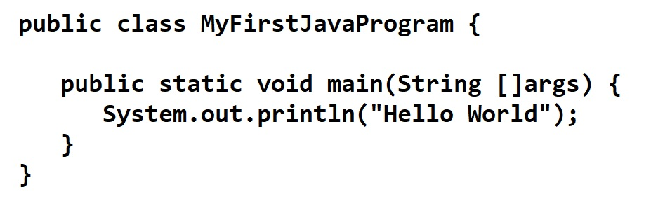

Java is a high-level programming language originally developed by Sun Microsystems and released in 1995. Java runs on a variety of platforms, such as Windows, Mac OS, and the various versions of UNIX. This tutorial gives a complete understanding of Java.
Java programming language was originally developed by Sun Microsystems which was initiated by James Gosling and released in 1995 as core component of Sun Microsystems' Java platform (Java 1.0 [J2SE]).
The latest release of the Java Standard Edition is Java SE 8. With the advancement of Java and its widespread popularity, multiple configurations were built to suit various types of platforms. For example: J2EE for Enterprise Applications, J2ME for Mobile Applications.
The new J2 versions were renamed as Java SE, Java EE, and Java ME respectively. Java is guaranteed to be Write Once, Run Anywhere.
What is Java?
History
James Gosling initiated Java language project in June 1991 for use in one of his many set-top box projects. The language, initially called ‘Oak’ after an oak tree that stood outside Gosling's office, also went by the name ‘Green’ and ended up later being renamed as Java, from a list of random words.
Sun released the first public implementation as Java 1.0 in 1995. It promised Write Once, Run Anywhere (WORA), providing no-cost run-times on popular platforms.
On 13 November, 2006, Sun released much of Java as free and open source software under the terms of the GNU General Public License (GPL).
On 8 May, 2007, Sun finished the process, making all of Java's core code free and open-source, aside from a small portion of code to which Sun did not hold the copyright.
Sun released the first public implementation as Java 1.0 in 1995. It promised Write Once, Run Anywhere (WORA), providing no-cost run-times on popular platforms.
On 13 November, 2006, Sun released much of Java as free and open source software under the terms of the GNU General Public License (GPL).
On 8 May, 2007, Sun finished the process, making all of Java's core code free and open-source, aside from a small portion of code to which Sun did not hold the copyright.
Tools You Will Need
For performing the examples discussed in this tutorial, you will need a Pentium 200-MHz computer with a minimum of 64 MB of RAM (128 MB of RAM recommended).
You will also need the following softwares −
You will also need the following softwares −
- Linux 7.1 or Windows xp/7/8 operating system
- Java JDK 8
- Microsoft Notepad or any other text editor This tutorial will provide the necessary skills to create GUI, networking, and web applications using Java.
Sample Code
Hello World

Download
Free Java Download
Download Java for your desktop computer now!
Version 8 Update 181
Release date July 17, 2018
Why download Java?
Java technology allows you to work and play in a secure computing environment. Upgrading to the latest Java version improves the security of your system, as older versions do not include the latest security updates.
Java allows you to play online games, chat with people around the world, calculate your mortgage interest, and view images in 3D, just to name a few.
Download Java for your desktop computer now!
Version 8 Update 181
Release date July 17, 2018
Why download Java?
Java technology allows you to work and play in a secure computing environment. Upgrading to the latest Java version improves the security of your system, as older versions do not include the latest security updates.
Java allows you to play online games, chat with people around the world, calculate your mortgage interest, and view images in 3D, just to name a few.
Hello World